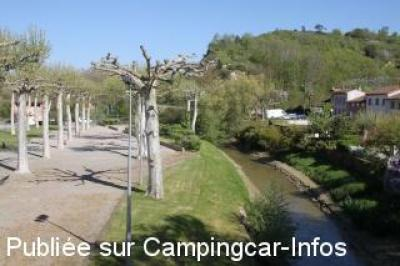
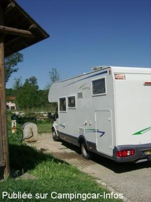
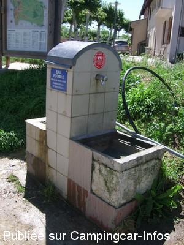
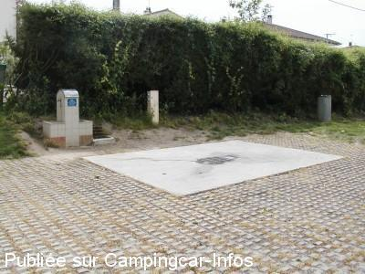
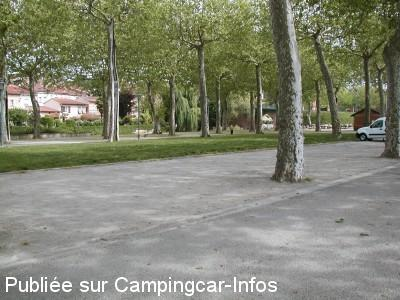

ASN = Aire de services avec stationnement nuit possible de :
VENERQUE
(N° 809)
Accès/adresse :
Allée du Duc de Ventadour
31810 VENERQUE
31810 VENERQUE
Latitude : (Nord) 43.4334° Décimaux ou 43° 26′ 0′′
Longitude : (Est) 1.4403° Décimaux ou 1° 26′ 25′′
Tarif : Gratuit
Type de borne : Artisanale
Services :


Commerces à proximité
Autres informations :
Aire ombragée et calme
Tél : +33(0)562 115 959
http://www.france-pratique.fr/ville/information-v-Venerque-vil_cp-31810-vil_id-11871-v-Venerque.html

Le 01/05/2013 par sybrub

Le 22/05/2011 par voyageur 65

Le 22/05/2011 par voyageur 65

Le 03/01/2007 par Brian Ramsden

Le 03/01/2007 par Brian Ramsden
de
chapsal
le 14/06/2015 :
Nous avons stationné sur cette aire en avril 2015 .aire à priori sympa mais très bruyante à partir de 21h ( jeunes très bruyants : cris musique à fond démarrages en trombe ) .ceci jusqu' à ‘ à 2h du matin . nous y sommes revenus le 14 juin ( famille dans le village )et là nous avons été cambriolés en plein sommeil . forçage de la portière conducteur au tournevis .nous avons été réveillés par une lampe torche qui visualisait plus dans la cellule .nous allons voir au matin les autres cc qui nous disent être au courant de 3 vols identiques la semaine avant .pour nous c' est terminé pour l' aire sympa de Venerque .
Nous avons stationné sur cette aire en avril 2015 .aire à priori sympa mais très bruyante à partir de 21h ( jeunes très bruyants : cris musique à fond démarrages en trombe ) .ceci jusqu' à ‘ à 2h du matin . nous y sommes revenus le 14 juin ( famille dans le village )et là nous avons été cambriolés en plein sommeil . forçage de la portière conducteur au tournevis .nous avons été réveillés par une lampe torche qui visualisait plus dans la cellule .nous allons voir au matin les autres cc qui nous disent être au courant de 3 vols identiques la semaine avant .pour nous c' est terminé pour l' aire sympa de Venerque .
de
Anemone 66
le 13/08/2014 :
Aire agréable, mais pour une ou deux nuits seulement, car pas beaucoup de place, et certains emplacements par temps de pluie ressemblent à des petites mares.
Ce fut le cas pour nous, il y a quelques jours. avons trouvé une place entre deux autres camping-cars.
L'aire de vidange était également bien entourée d'eau, mais nous avons quand même pu vidanger et remplir le réservoir d'eau propre. A essayer.
Aire agréable, mais pour une ou deux nuits seulement, car pas beaucoup de place, et certains emplacements par temps de pluie ressemblent à des petites mares.
Ce fut le cas pour nous, il y a quelques jours. avons trouvé une place entre deux autres camping-cars.
L'aire de vidange était également bien entourée d'eau, mais nous avons quand même pu vidanger et remplir le réservoir d'eau propre. A essayer.
de
sybrub
le 01/05/2013 :
nous y étions le 24/04/2013. Aire situé à coté de la base canoé. Le stationnement est utilisé aussi par les voitures, les boulistes notamment qui sont venus jouer en fin de journée, ensuite quasiment plus aucune voiture. Le jeudi matin, petit marché de l'autre coté de la rue, juste en face de l'aire, c'est le top pour un ravitaillement avant de reprendre la route. Tous commerces à proximité (boulanger, boucherie, banque, poste, resto etc...
nous y étions le 24/04/2013. Aire situé à coté de la base canoé. Le stationnement est utilisé aussi par les voitures, les boulistes notamment qui sont venus jouer en fin de journée, ensuite quasiment plus aucune voiture. Le jeudi matin, petit marché de l'autre coté de la rue, juste en face de l'aire, c'est le top pour un ravitaillement avant de reprendre la route. Tous commerces à proximité (boulanger, boucherie, banque, poste, resto etc...
de
Thierry B.
le 07/09/2012 :
De passage aux alentours du 15 août, aire inutilisable mais stationnement agréable (partiellement) ombragé.
De passage aux alentours du 15 août, aire inutilisable mais stationnement agréable (partiellement) ombragé.
de
bazar
le 17/07/2012 :
Aire tranquille.
Dommage quand même car les emplacements sont utilisés comme parking par les voitures donc plus assez de places pour les camping cars.
Aire tranquille.
Dommage quand même car les emplacements sont utilisés comme parking par les voitures donc plus assez de places pour les camping cars.
de
Eric
le 22/05/2011 :
Bonjour.
À côté de l'air de services.
la Halte garderie jouait avec les enfants.
Les responsables ont servi les enfants avec le robiner qui sert pour les cassettes.
Les campingcar prévenant ces derniers ont changé de robiner pour boire.
Il est vrai qu'il n'y a pas d'indication pour l'utilisation de ces robiners.
Monsieur le maire pour en informer vos concitoyens il serait bien de mettre un logo
pour que les petits de votre village ne soient pas malades avec les bactéries.
Merci pour la gratuité ainsi que l'accueil de ce village.
Bonjour.
À côté de l'air de services.
la Halte garderie jouait avec les enfants.
Les responsables ont servi les enfants avec le robiner qui sert pour les cassettes.
Les campingcar prévenant ces derniers ont changé de robiner pour boire.
Il est vrai qu'il n'y a pas d'indication pour l'utilisation de ces robiners.
Monsieur le maire pour en informer vos concitoyens il serait bien de mettre un logo
pour que les petits de votre village ne soient pas malades avec les bactéries.
Merci pour la gratuité ainsi que l'accueil de ce village.
de
Roussie
le 23/05/2010 :
Aire ombragée et calme ,très bien
Aire ombragée et calme ,très bien
de
frust
le 16/04/2010 :
Super aire à l'ombre des platanes, emplacements spacieux, à plat, jeux de pétanque, poubelles à dispo, piste de BMX, WC publics, remplissage d'eau, vidanges et stationnement gratuit, très calme, le tout bordé par de 2 rivières. Supérette et boulangerie à proximité. Bref, que du bonheur pour nous les camping-caristes.
Dommage que la borne élèctrique ne fonctionnait pas.
Merci à Venerque
Super aire à l'ombre des platanes, emplacements spacieux, à plat, jeux de pétanque, poubelles à dispo, piste de BMX, WC publics, remplissage d'eau, vidanges et stationnement gratuit, très calme, le tout bordé par de 2 rivières. Supérette et boulangerie à proximité. Bref, que du bonheur pour nous les camping-caristes.
Dommage que la borne élèctrique ne fonctionnait pas.
Merci à Venerque
de
cc76
le 27/08/2008 :
Base de canoé à côté, c'est super !
Base de canoé à côté, c'est super !
de
Catherine
le 09/05/2008 :
Passage fin avril. Cadre très agréable, beaucoup de places. Borne éléctrique détériorée (fils coupés).
Passage fin avril. Cadre très agréable, beaucoup de places. Borne éléctrique détériorée (fils coupés).
de
Tarisien serge
le 03/04/2008 :
Très belle aire avec joli parking ombragé gratuit. Elle se trouve juste après le pont, à droite en allant sur Vernet.
Très belle aire avec joli parking ombragé gratuit. Elle se trouve juste après le pont, à droite en allant sur Vernet.
de
welcom 16
le 07/08/2007 :
Aire sympatique avec un stationnement possible sous les platanes et au bord de l'eau. Services + stationnement gratuits. Proche du centre du village et d'une belle église.
Aire sympatique avec un stationnement possible sous les platanes et au bord de l'eau. Services + stationnement gratuits. Proche du centre du village et d'une belle église.
de
P.R
le 01/04/2007 :
Aire très calme et ombragée en plein village. Tout commerce à proximité, très beau village qui vaut le détour.
Aire très calme et ombragée en plein village. Tout commerce à proximité, très beau village qui vaut le détour.
de
fanchette
le 04/11/2006 :
J'y suis allée 2 fois pendant les vacances de la Toussaint, il n'y a pas de WC ou alors je n'ai pas réussi à les trouver.
J'y suis allée 2 fois pendant les vacances de la Toussaint, il n'y a pas de WC ou alors je n'ai pas réussi à les trouver.